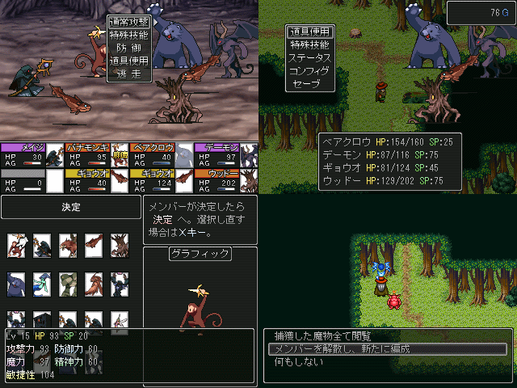

| No,079 【正直間に合わんかった実験作】 |
| ダウンロード（2.87MB）[2003製] |
 |
| 【ＨＮ】 Iwill 【コメント】 どこまでいっても完成する気がしない．．． どれだけ中身を削っても完成する気が(ry どれだけ必死になっても(ry 24日間で完成という目標にそもそも無理があった。だがこの十数日間でシステム部分だけはそれなりに出来てきた。なんとか作品として提出できるようにしたい。 最悪、体験版として出すか、間に合わなくなるかもしれない。が、残り少ない時間で俺はやれるだけのことはやるつもりだ。 魔物を仲間にしてダンジョンを攻略するだけの単調な短編RPG。劣化ポケモンをさらに劣化させたもの。最初はこんなタイトルにする予定じゃなかった。 |
| 【管理人コメント】 これは物凄いＳＳ・・クオリティをビンビン感じるぜ だがそれなりの労力も要りそうだ |